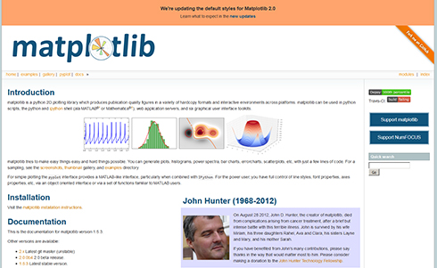
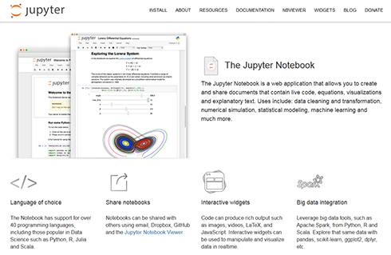
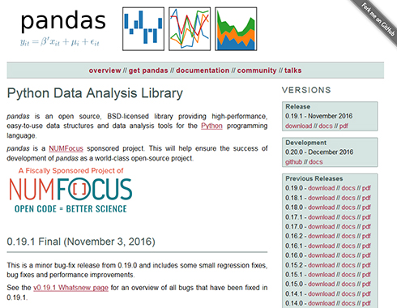
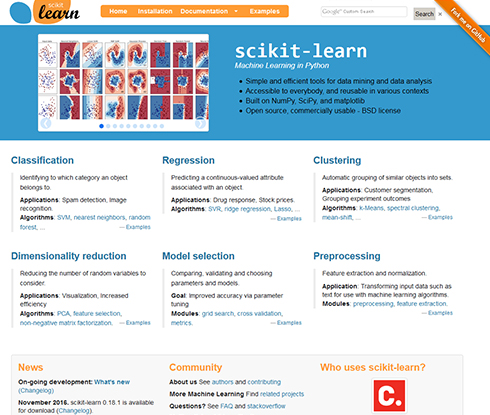
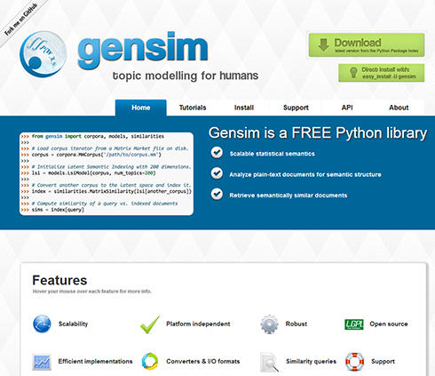
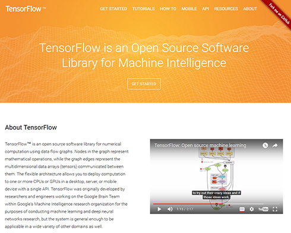

前言¶
很长时间，没写点什么了。
计算机这个行当，所有人都要不同程度上学习新知识。学习可说是开发人员必备的一个技能。说教谁有点过分了。比如在机器学习、人工智能方面，直接从事开发的人不多。有一定程序开发经验的人，如何着手，是个问题。能很独立写程序的人，都有一个习惯，问题点在哪？可能在哪几个地方花时间，对难的东西比较敏感。对机器学习来说，毫无疑问，各种算法，是难中之难。如果从这里下手，恐怕是要撞墙。前两天，不是很甘心，和学精算师的儿子，借了本概率的书，给我来了句，“这东西简单”。他是不知道他老子，算2+3都想用以下计算器。做工程的，架构师也好，SE也罢。会用就是好的了。alphago赢了人类，人工智能有这么大的突破，正把理论带到今天的发展，做出贡献的不过寥寥数人，还都是数学方面的人才。
说了这么多闲话，学习比较捷径就是先动起来。熟悉了之后，在应用层面上下功夫。所以，在选择上，也是能够理论和实践能同时进行的这种系列。
感谢加藤公一先生，原稿做得很精细。基本上没需要什么确认，程序都能运行。这里想提一下。国人也常在网上发表类似的文稿，有时，看着想法不错拿来试试，难得能跑起来，改到后来，说不清是谁写的程序了。想起了一条业界规则“用90%的时间用做10%的工作”，养成一个良好的工作习惯，能让我们的工作生活更轻松。
近来的一点所感，觉得java、c++这种原来的强势语种的优势还有多少？比如在CMS方面，PHP做得很成熟， 机器学习上，前端几乎是Python的天下。
深度学习中的常用工具¶
Python广泛用于机器学习领域, 在此介绍Python机器学习中常用的工具库。
数值计算工具Numpy/Scipy
绘图工具Matplotlib
Web在线编辑调试工具Jupyter Notebook
大规模数据高速处理pangda
标准机器学习算法工具Scikit-learn
主题模型的自然语言处理库Gensim
深度学习引擎库TensorFlow
概要说明上述个工具库。这是个人工作中常用的工具库，可能有所偏颇。
## 数值计算的基础工具Numpy/Scipy¶

Numpy/Scipy是数值计算的基底库，在Scikit-learn、TensorFlow也是使用Numpy/Scipy来开发实现的。Numpy提供的数组、向量矩阵计算尤为重要，此外，它还提供了数值计算的各种基底函数，例如线性代数和数学函数等。
SipScipy提供了在科学计算中，集成度比Numpy更高的一些功能。包括稀疏矩阵，积分，内插，统计处理，傅立叶变换，信号处理和数值优化等。 Numpy和Scipy是分别独立的库，但在科学计算中经常同时使用，大多数与机器学习相关的库都依赖于两者。此后，将在不考虑Numpy、Scipy的详细区划。 当使用既存的库（如Scikit-learn）执行机器学习时，Numpy、Scipy的使用并非一定必须，但在一些数据处理中会用到，需要一定程度的掌握。
## Matplotlib：用于绘制散点图，图形，直方图等¶

Matplotlib是一个绘制图形库。有绘制散点图，折线图，条形图，直方图，饼图等功能。还可以绘制三维图，以及向图表添加各种视觉效果等。
Matplotlib官方网上，有直观的视觉体验。 绘制图表与机器学习本身并不直接相关，但直观提示这一点，在抽象的数据分析中，也同样重要。所以，作为绘图手段的Matplotlib也需要学习。
## Jupyter Notebook：通过Web界面编辑的同时执行¶

「Jupyter Notebook」是一个可视化的开发环境。曾经被称为「IPython Notebook」，现在也支持Python以外的开发语言，更名至此。
通过Web浏览器访问服务器被启动执行。通过浏览器执行Python代码，提供直观视觉的界面，能够交互式地确认代码。可以保存调试结果并重复使用。还可以插入以Markdown格式为首的各类格式的文档，适用于文档和代码混合的演稿。
## Pandas：大规模数据高速处理¶

Pandas是大规模数据处理用库。在机器学习的主要用在数据的预处理。
可以高速得读取一些典型的数据格式和后续数据加工处理。 Pandas的基本数据类型有Series和DataFrame， 分别对应于一维数组和二维数组，两者都可通过索引快速访问。另外，DataFrame可以像SQL一样进行处理，通过使用Group-by引擎和聚合函数提高处理速度。
## Scikit-learn：Python标准版的机器学习库¶

Scikit-learn是一个标准的Python机器学习库，实现了主要的机器学习算法。还提供了用于各种任务（例如分类，回归和聚类）的算法，以及用于评估的便捷工具，如超参数网格搜索和交叉验证等。
另外，Scikit-learn提供了一致性的接口。简化了在更改算法时的编程工作。该一致性接口也被其它类似的库所模仿。 Scikit-learn的文档中不仅有如何使用API的说明，还有机器学习算法机制的解说，可以作为机器学习的补充教材。
## 主题模型自然语言处理库Gensim¶

Gensim是自然语言处理库。提供文本处理工具，有TF-IDF（术语频率-反文档频率）、LSA（潜在语义分析）、LDA（线性判别分析）、word2vec等典型算法。
## 深度学习引擎库TensorFlow¶

TensorFlow是Google开发的神经网络深度学习引擎。
使用TensorFlow进行定义流程，然后执行计算。可以选择在运行时在CPU或GPU上运行。之所以快速，是因为其在预先编译了网络结构之后才稼动。
Python的深度学习中还有其他各种库，所以选择TensorFlow。原因是它用途广泛且文档齐全，并带有示例。TensorFlow文档中的图像识别、word2vec点典型示例中，还有算法细节的说明。
[ ]: